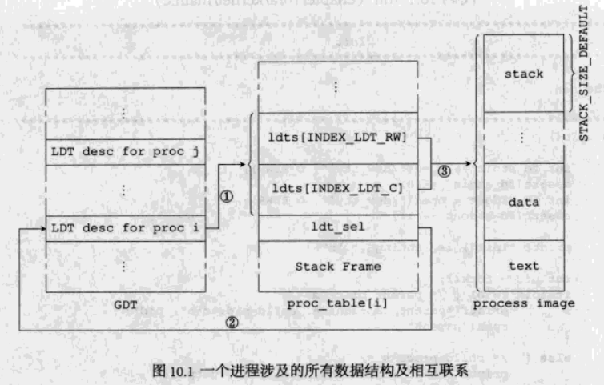
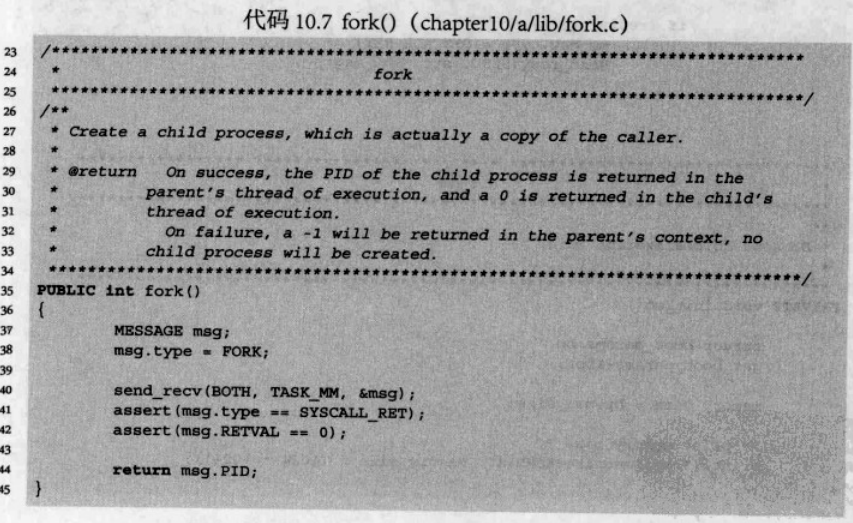

# fork
一个新的进程需要的要素：
- 自己的代码，数据和堆栈；
- 在 proc_table [] 中占用一个位置；
- 在 GDT 中占用一个位置，用以存放进程对应的 LDT 描述符。
# fork 概念
系统调用 fork () 用来生成一个子进程。每个进程有唯一的 pid，如果调用 fork () 前后 pid 一致，说明进程为父进程，反之为子进程。

# 准备工作
fork 前我们可以提前做好准备的事情：
- 在 proc_table [] 中预留出一些空项，供新进程使用；
- 将 proc_table [] 中的每一个进程表项中的 ldt_sel 项都设定好（关系②)；
- 将进程所需的 GDT 表项都初始化好（关系①）。
书中将整个内核占用的内存当做 Init 的内存范围。
# fork () 库函数

# MM（内存管理）
C 1
2
3
4
5
6
7
8
9
10
11
12
13
14
15
16
17
18
19
20
21
22
23
24
25
26
27
28
29
30
31
32
33
34
35
36
37
38
39
40
41
42
43
44
45
46
47
48
49
50
51
52
53
54
55
56
57
58
59
60
61
62
63
64
65
66
67
68
69
70
71
72
73
74
75
76
77
78
79
80
81
82
83
84
85
86
87
88
89
90
91
92
93
94
95
96
97
98
99
100
101
PUBLIC int do_fork()
{
/* find a free slot in proc_table */
struct proc* p = proc_table;
int i;
for (i = 0; i < NR_TASKS + NR_PROCS; i++,p++)
if (p->p_flags == FREE_SLOT)
break;
int child_pid = i;
assert(p == &proc_table[child_pid]);
assert(child_pid >= NR_TASKS + NR_NATIVE_PROCS);
if (i == NR_TASKS + NR_PROCS) /* no free slot */
return -1;
assert(i < NR_TASKS + NR_PROCS);
/* duplicate the process table */
int pid = mm_msg.source;
u16 child_ldt_sel = p->ldt_sel;
*p = proc_table[pid];
p->ldt_sel = child_ldt_sel;
p->p_parent = pid;
sprintf(p->name, "%s_%d", proc_table[pid].name, child_pid);
/* duplicate the process: T, D & S */
struct descriptor * ppd;
/* Text segment */
ppd = &proc_table[pid].ldts[INDEX_LDT_C];
/* base of T-seg, in bytes */
int caller_T_base = reassembly(ppd->base_high, 24,
ppd->base_mid, 16,
ppd->base_low);
/* limit of T-seg, in 1 or 4096 bytes,
depending on the G bit of descriptor */
int caller_T_limit = reassembly(0, 0,
(ppd->limit_high_attr2 & 0xF), 16,
ppd->limit_low);
/* size of T-seg, in bytes */
int caller_T_size = ((caller_T_limit + 1) *
((ppd->limit_high_attr2 & (DA_LIMIT_4K >> 8)) ?
4096 : 1));
/* Data & Stack segments */
ppd = &proc_table[pid].ldts[INDEX_LDT_RW];
/* base of D&S-seg, in bytes */
int caller_D_S_base = reassembly(ppd->base_high, 24,
ppd->base_mid, 16,
ppd->base_low);
/* limit of D&S-seg, in 1 or 4096 bytes,
depending on the G bit of descriptor */
int caller_D_S_limit = reassembly((ppd->limit_high_attr2 & 0xF), 16,
0, 0,
ppd->limit_low);
/* size of D&S-seg, in bytes */
int caller_D_S_size = ((caller_T_limit + 1) *
((ppd->limit_high_attr2 & (DA_LIMIT_4K >> 8)) ?
4096 : 1));
/* we don't separate T, D & S segments, so we have: */
assert((caller_T_base == caller_D_S_base ) &&
(caller_T_limit == caller_D_S_limit) &&
(caller_T_size == caller_D_S_size ));
/* base of child proc, T, D & S segments share the same space,
so we allocate memory just once */
int child_base = alloc_mem(child_pid, caller_T_size);
/* int child_limit = caller_T_limit; */
printl("{MM} 0x%x <- 0x%x (0x%x bytes)\n",
child_base, caller_T_base, caller_T_size);
/* child is a copy of the parent */
phys_copy((void*)child_base, (void*)caller_T_base, caller_T_size);
/* child's LDT */
init_desc(&p->ldts[INDEX_LDT_C],
child_base,
(PROC_IMAGE_SIZE_DEFAULT - 1) >> LIMIT_4K_SHIFT,
DA_LIMIT_4K | DA_32 | DA_C | PRIVILEGE_USER << 5);
init_desc(&p->ldts[INDEX_LDT_RW],
child_base,
(PROC_IMAGE_SIZE_DEFAULT - 1) >> LIMIT_4K_SHIFT,
DA_LIMIT_4K | DA_32 | DA_DRW | PRIVILEGE_USER << 5);
/* tell FS, see fs_fork() */
MESSAGE msg2fs;
msg2fs.type = FORK;
msg2fs.PID = child_pid;
send_recv(BOTH, TASK_FS, &msg2fs);
/* child PID will be returned to the parent proc */
mm_msg.PID = child_pid;
/* birth of the child */
MESSAGE m;
m.type = SYSCALL_RET;
m.RETVAL = 0;
m.PID = 0;
send_recv(SEND, child_pid, &m);
return 0;
}
- 分配进程表。从数组 proc_table [] 中寻找一个空项，用于存放子进程的进程表。然后将父进程的进程表原原本本赋给子进程。
- 分配内存。读取 LDT 来得到父进程的内存占用情况。注意，我们不区分代码、数据和堆栈，即三个段指向相同的地址空间。phys_copy () 函数将父进程的内存空间完整地赋值一份给新分配的空间。由于内存空间不同，需要更新子进程的 LDT。
- 通知 FS，进行父子进程间的文件共享。
- 给子进程发一个消息，解除阻塞，并将 0 作为返回值传递给子进程，让子进程知道自己的身份。对于父进程，MM 的主消息循环会发送消息给它。
注意：我们需要特别关注对内存分配（默认一个格子 1MB）和文件描述符的处理（FS 用于增加两个计数器）。
# 内存分配
内存分配采用划定格子的方案，每个格子大小固定。有新的进程需要内存，就给一个格子，且该进程在整个生命周期中，只能使用这个格子的内存。
首先定义内存分配相关的宏：
1 |
分配内存函数：
1 | PUBLIC int alloc_mem(int pid, int memsize) |
# 对文件描述符的处理
fork 一个子进程需要 FS 来协助，FS 主要是增加两个计数器：
- 隶属于 inode 结构的 i_cnt 计数器：只要有进程使用这个 inode，其 i_cnt 就加 1；
- 属于 file_desc 结构的 fd_cnt：假设进程 P 生成进程 C，那么 P,C 共享使用 f_desc_table [] 中的同一个 file_desc 结构，这时 fd_cnt 为 2。退出一个进程就自减。当 fd_cnt 自减为 0，系统会将 fd_inode 赋值为 0，这样改 f_desc_table [] 条目又可以被使用了。
# exit 和 wait
exit ()：进程退出。
父进程得到返回值，就是执行一个 wait () 挂起，等子进程退出时，wait () 调用方结束，并且父进程因此得到返回值。
# exec
exec: 将当前的进程映像替换成另一个，也就是说，我们可以从硬盘上读取另一个可执行的文件，用它替换掉刚刚被 fork 出来的子进程。
# 简单的 shell
1 | void shabby_shell(const char * tty_name) |
1 | void Init() |